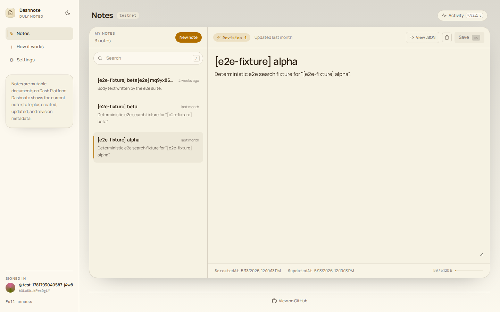
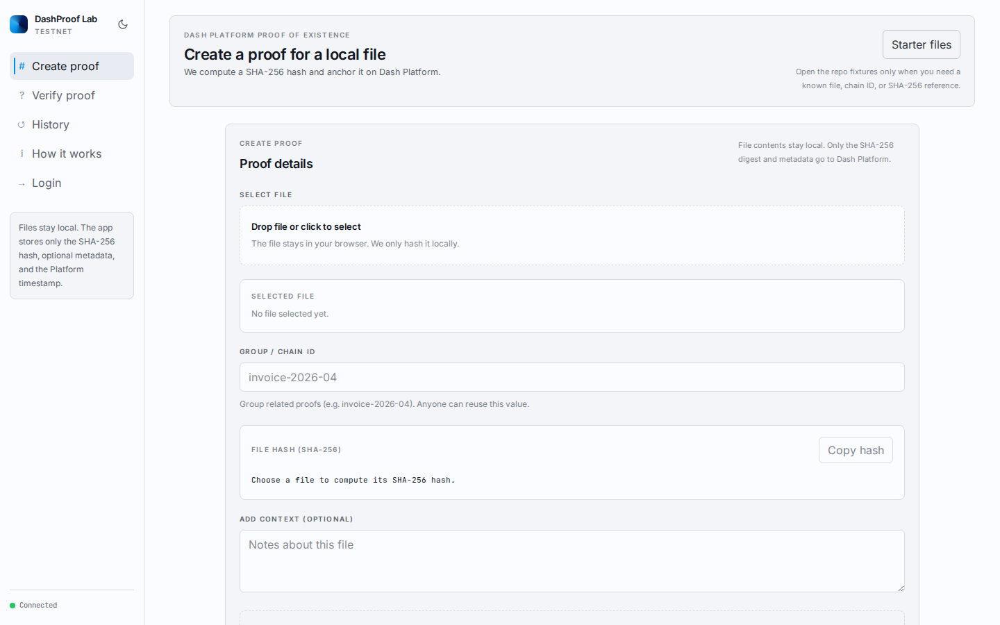

DashMint Lab
Best for NFT-style ownership flows and token-gated creation.
Dash Platform tutorials
Four browser examples show how the same Platform SDK patterns become NFT-style collectibles, notes, ratings, and proof-of-existence records on testnet. Dashnote Starter appears as the minimal path into Dashnote.
Tokens and NFT-style documents
A collectible-card marketplace app where NFT-style documents can be minted, transferred, listed, purchased, and burned.
The core pattern is NFT-style document ownership plus token scarcity: cards move through marketplace actions, while tokens control who can create new supply.

Identity-owned documents
A notes app where entries belong to a Dash Platform identity, not a device, account database, or browser session.
The special part is portability: identity-owned notes can move across apps while Platform handles document ownership, ordering, revision checks, and timestamp metadata.

Ratings and aggregate queries
A tutorial-resource ratings app centered on Platform v4 relational document queries and grouped counts.

Proof of existence
A file proof tutorial that keeps file contents local, hashes them in the browser, and anchors only the digest plus metadata on Platform.

How to read the examples
Start with the narrow examples when learning an operation. Move to the polished apps when you need production-shaped state, auth, and UX patterns.
Best for NFT-style ownership flows and token-gated creation.
Starter-to-polished notes path: same contract, compatible data, richer UI.
Best for indexes, aggregate counts, filtered reads, and history.
Best for local processing plus immutable proof records on Platform.